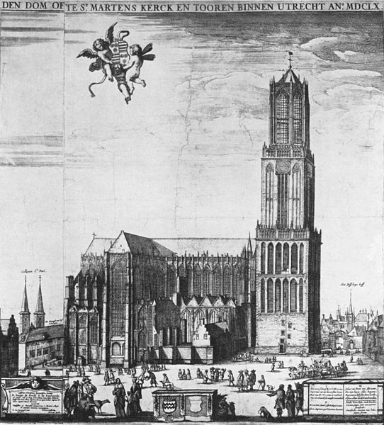

De Domkerk
Voeger hebben hier vele gebeurtenissen zich afgespeeld. Bekijk je collectie, ontrafel het symbool en kom meer te weten over deze locatie.
Deze kerk was ooit één geheel, maar door een wervelstorm is er een middenstuk tussenuit weggevaagd. Of heeft er toch iets anders afgespeeld wat de oorzak hiervan was?
Loop weg en wordt incognito om deze pop-up te sluiten.